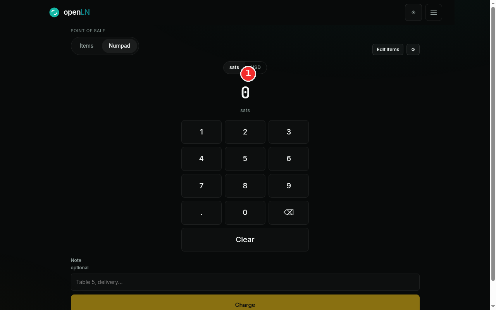
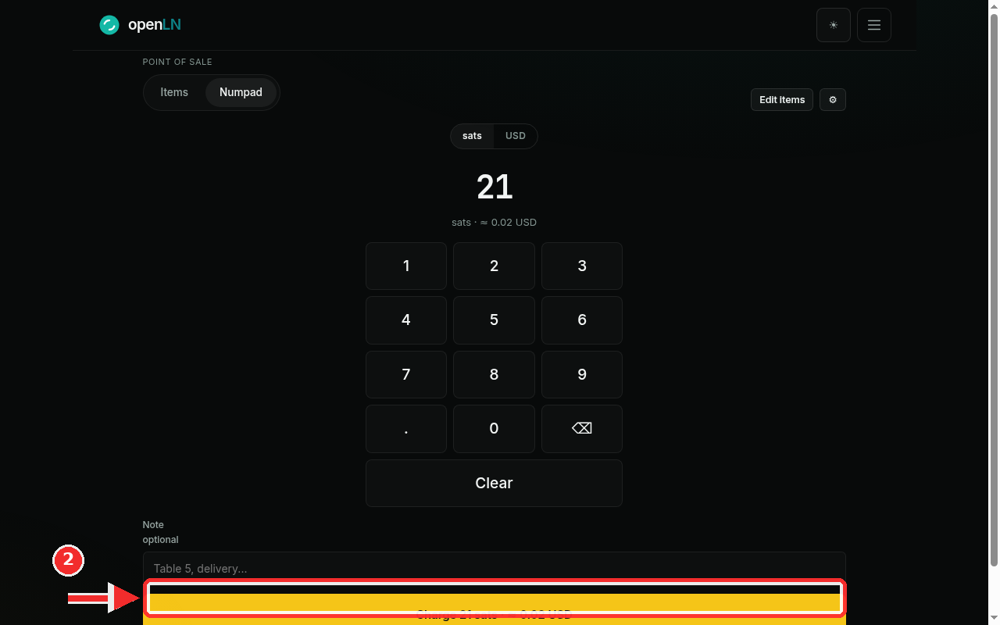
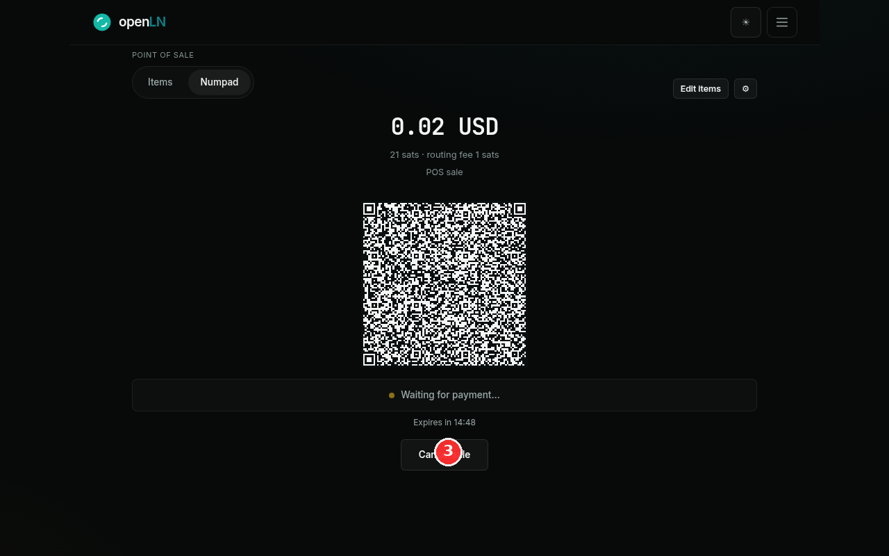

How to charge a custom amount with the POS keypad
Not every sale has an item tile. When a customer wants something that is not on your pad, such as a one-off order or a price you only agreed at the counter, you can type the amount straight into the POS keypad, in your currency or in sats. The sale then finishes on the same QR payment screen as an item sale. This guide walks through the whole flow, from typing the amount to cancelling if the customer changes their mind.
- You are signed in to your openLN account with the POS page open.
- A wallet is connected: sales are paid straight into it. If the page says "Connect a wallet to start selling", tap Connect wallet first. openLN never takes custody of your sats.
- Nothing is charged while you type. Money only moves after the customer scans the QR and pays.
Open the Numpad tab and type the amount
The POS page has two tabs at the top left, Items and Numpad. Tap Numpad and the item grid gives way to the amount display and an on-screen keypad. The display starts at 0, so every sale begins from a clean number. Type the amount with the keypad and the digits appear in large type as you go. The sats / USD toggle just above the display picks the unit you are typing in, and its second side always shows your account's currency. Switching the toggle converts the amount you have already typed, so you never have to start over.

Check the conversion and press Charge
With sats selected, type 21: the display shows 21, and the small line under it reads sats ≈ 0.02 USD, the same amount in the other unit. That line updates as you type, so you can always see roughly what the customer is about to pay. Under the keypad there is an optional Note field for a label such as "Table 5". The Charge button at the bottom is now active, and its label shows what will be charged: Charge 21 sats, followed by the approximate value in your currency. Press it and openLN creates the invoice and moves to the payment screen. Nothing is charged yet, and the button stays disabled until an amount is on the display and a wallet is connected, so an empty sale cannot go through by mistake.

Show the QR and watch for payment
The payment screen shows the amount at the top (0.02 USD for this sale), the sats total with its routing fee (21 sats · routing fee 1 sats), and the memo line the invoice carries (POS sale, plus your note if you typed one). The QR code sits in the middle: the customer scans it with any Lightning wallet, or scans your screen if it is facing them. The status line reads Waiting for payment... with a countdown under it (Expires in 14:48 here), so you can see how long the quote is good for. When a payment arrives, the status changes to Payment received, the screen confirms the sale, and the POS returns to the pad after a few seconds, ready for the next customer.
If the customer cannot pay after all, tap Cancel sale at the bottom of the screen. The sale is aborted, the invoice is closed, and nothing is charged. If a payment is already on its way, the sale finishes instead, and openLN tells you so.

- No item tile needed. Use the keypad for any amount that has no tile: a one-off price, a tip, or something you do not sell often enough to keep on the pad. The keypad path finishes on the same QR payment screen as an item sale, so nothing changes for the customer.
- Cancel sale aborts with no charge. As long as nothing has been paid yet, Cancel sale closes the invoice and the sale is cancelled; the customer cannot pay it afterwards. If the money is already moving, the sale finishes instead and openLN tells you.
- Keypad details. The amount takes up to 10 digits. Clear wipes it, the backspace key removes one character at a time, and in sats mode the decimal point is not available, because sats do not have decimals.
- Unit and rate. Your sats or currency choice is remembered on this device, so it survives a reload. The conversion uses the live rate with your account's rate adjustment applied; if the rate cannot be fetched, the sale is refused with a message rather than converted at a wrong number, so just try again in a moment.